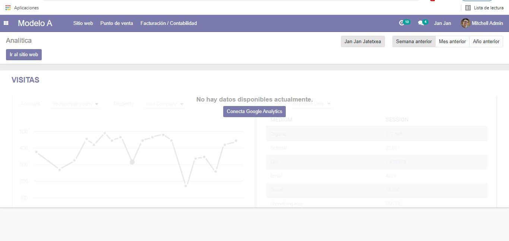
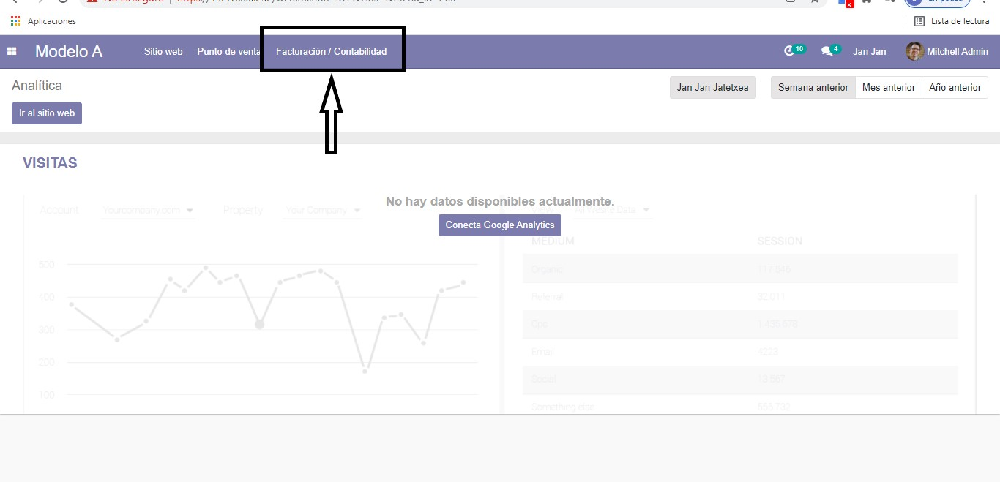
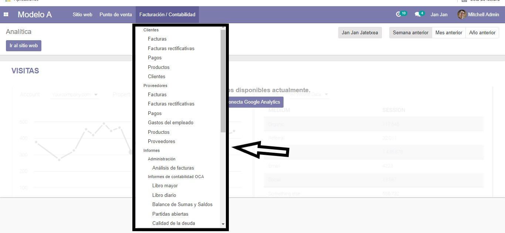
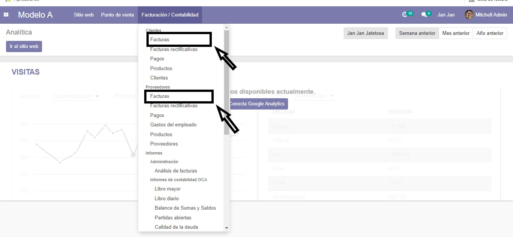
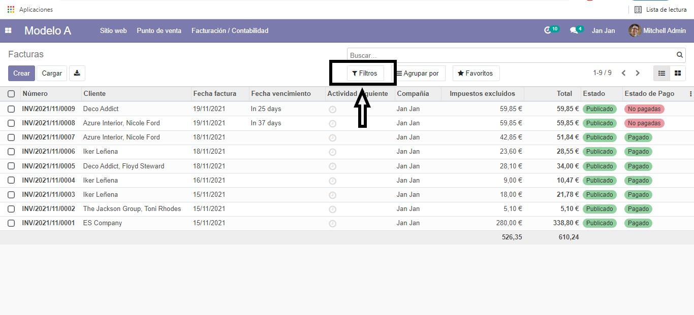
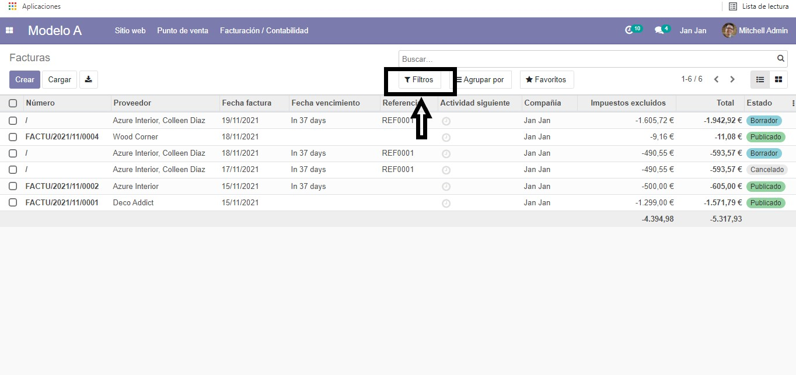

Acceso inicial
El primer paso que deberemos realizar será situarnos en la página principal como venimos haciendo desde el principio. Este es el aspecto que tiene (donde se ve en la imagen).

Navegación a Facturación y Contabilidad
Una vez estemos en esta página principal nos iremos al apartado de "Facturación y Contabilidad", que es donde encontraremos la información que buscamos.

Subapartados disponibles
En "Facturación y Contabilidad" se nos abrirá un desplegable en el cual podremos ver que hay muchos subapartados. En este caso a nosotros nos interesarían dos en particular:
- Facturas de los Clientes
- Facturas de los Proveedores

Apartados de facturas
Estos son los apartados mencionados:
- Clientes: Sus facturas correspondientes
- Proveedores: Sus facturas correspondientes

Vista de facturas de clientes
Una vez clickamos en "Facturas de Clientes" vemos que nos abre en pantalla la siguiente página. En esta, para poder filtrar por fechas de más recientes a menos, veremos que hay un botón en el que pone "Filtro" (donde señala la imagen). Según nuestras preferencias podemos filtrar las facturas.


Facturas de proveedores
En cuanto a "Facturas de Proveedores" la forma de filtraje es la misma. Situarse en el botón "Filtro" donde ajustaremos este filtro en función a lo que estemos buscando.
Información importante
Con estas herramientas podrás obtener:
- Balance general de la empresa
- Estado de cuentas por pagar
- Estado de cuentas por cobrar
- Análisis de flujo de caja